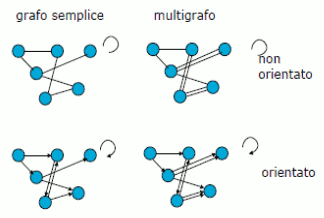
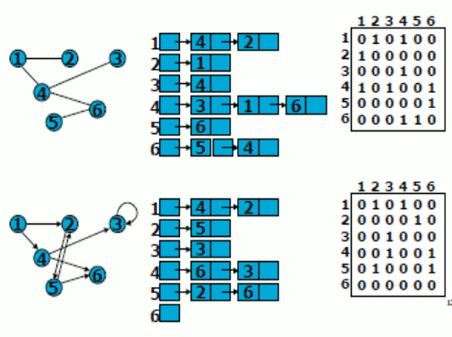
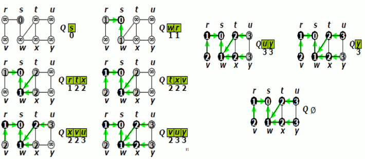
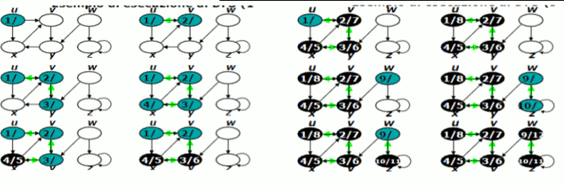
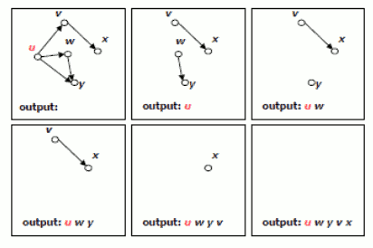

Torna alla pagina di Algoritmi e strutture dati
Questa pagina è stata aggiornata GRAZIE agli appunti che AVETE INVIATO nel periodo di chiusura della sezione UniCrema!! È SERVITA A QUALCOSA, NO?! ;)
:: Algoritmi e strutture dati - Glossario grafi ::
Grafo
Un grafo G = (V,E) è costituito da un insieme di vertici V ed un insieme di archi E ciascuno dei quali connette due vertici in V detti estremi dell'arco.
Grafo Orientato
Quando vi è un ordine tra i due estremi degli archi. In questo caso il primo estremo si dice coda e il secondo testa.
Cappio
È un arco i cui estremi coincidono.
Grafo non orientato semplice
Grafo che non ha cappi e non ci sono due archi con gli stessi estremi.
Grafo orientato semplice
Grafo in cui non ci sono due archi con gli stessi estremi. In caso contrario si parla di
multigrafo.

Archi
Se un grafo è semplice indentifichiamo un arco con la coppia dei suoi estremi:
e = uv ∈ E (diciamo che l'arco e è incidente in u e in v)
Se il grafo è orientato la coppia uv è ordinata (v è adiacente a u) altrimenti si dice che l'arco e esce da u ed entra in v (adiacenza simmetrica).
Grado di un nodo
Il grado del vertice v è il numero di archi incidenti in v. Se il grafo è orientato si suddivide in un grado entrante (archi entranti) ed un grado uscente (archi uscenti).
Percorso in un grafo
Un percorso di lunghezza k dal vertice u al vertice v in un grafo è una sequenza di k+1 (x0 = u e xk = v) vertici. Se k > 0 e x0= xk il percorso è chiuso.
Un cammino è un percorso i cui vertici sono tutti distinti con la possibile eccezzione di x0 = xk nel qual cosa esso è un ciclo. Un ciclo di lunghezza k=1 è un cappio. Un grafo aciclico è un grafo che non contiene cicli.
Raggiungibilità e componenti connesse
Quando esiste almeno un cammino dal vertice u al vertice v diciamo che il vertice v è accessibile o raggiungibile da u.
Un grafo non orientato si dice connesso se esiste almeno un cammino tra ogni coppia di vertici. Le componenti connesse di un grafo sono le classi di equivalenza dei suoi vertici rispetto alla relazione di raggiungibilità.
Componenti fortemente connesse
Un grafo orientato si dice fortemente connesso se esiste almeno un cammino da ogni vertice u ad ogni altro vertice v. Le componenti fortemente connesse di un grafo sono le classi di equivalenza dei suoi vertici rispetto alla relazione di mutua accessibilità.
Sottografo
Un sottografo del grafo G = (V,E) è un grafo G' = (V',E') tale che V'⊆V e E'⊆E.
Il sottografo di G = (V,E) indotto da V'⊆V è il grafo G' = (V',E') tale che:
E' = {uv: uv ∈ E e u,v ∈ V'}
Rappresenteazione di grafi: Liste di adiacenza
E' costituita da una lista Adj[u] (per ogni vertice u) che contiene i vertici adiacenti al vertice u.
Quantità memoria richiesta (sia orientato che non): O(|V|+|E|)
Velocità per determinare se un arco uv è presente: O(|V|)
Rappresentazione di grafi: Matrice delle adiacenze
Assume che i vertici siano numerati 1,2,...,|V| in modo arbitrario. La martrice è booleana e segna 1 se i vertici sono adiacenti altrimenti 0.
Quantita di memoria richiesta: O(|V|^2)
Velocita per determinare se un arco uv è presente: accesso diretto.

Visita in ampiezza (BFS)
Dato un grafo e un vertice scelto come sorgente, la visita in ampiezza parte da s e visita sistematicamente il grafo per scoprire tutti i vertici che sono raggiungibili da s.
Calcola la distanza (minima) di ogni vertice del grafo dalla sorgente s. Produce anche un albero BF i cui rami sono cammini di lunghezza minima. La visita espande uniformemente la frontiera tra i vertici scoperti e quelli non ancora scoperti.
Vertici colorati:
- Bianco (vertici non ancora raggiunti)
- Grigio (vertici raggiunti che stanno sulla frontiera)
- Nero (vertici raggiunti che non stanno sulla frontiera)
Algoritmo BFS
Assume che il grafo sia rappresentato con liste delle adiacenze. Usa una coda Q di vertici in cui memorizza la frontiera.
Complessità: O(n+m)
Proprietà delle distanze
Indichiamo con d(u,v) la distanza del vertice v dal vertice u: la lunghezza di un cammino minimo che congiunge u e v.
d(x,v) ≤ d(x,u) + 1 per ogni x ∈ V e ogni uv ∈ E
Proprietà del limite superiore e della coda
Per ogni vertice u e per tutta l'esecuzione di BFS vale la diseguaglianza:
d[u] ≥ d(s,u)
Se la coda Q non è vuota e contiene i vertici (v1,v2,...,vt) allora per ogni i=1, ..., t-1:
d[vi] ≤ d[vi+1]
ed inoltre
d[vt] ≤ d[v1] + 1
Correttezza di BFS
BFS visita tutti i vertici raggiungibili da s e quando termina d[v] = d(s,v) per ogni vertice v del grafo.

Visita in profondità (DFS)
Lo scopo è avanzare in profondità nella ricerca finchè è possibile. Si esplorano gli archi uscenti dal vertice u raggiunto per ultimo. Se viene scoperto un nuovo vertice v ci si sposta su tale vertice. Se tutti gli archi uscenti da u portano a vertici già scoperti si torna indietro e si riprende esplorando archi uscenti dal vertice cui u è stato scoperto. Il procedimento contiuna finchè si sono scoperti tutti i vertici raggiungibili dal vertice iniziale scelto. Se non sono stati raggiunti tutti i vertici del grafo si ripete il procedimento partendo da un vertice non ancora raggiunto (si sceglie una nuova sorgente).
Vertici colore:
- Bianco (vertici non ancora raggiunti)
- Grigio (vertici scoperti)
- Nero (vertici la cui lista delle adiacenze è stata completamente esplorata)
Marcatempi:
- d[u] registra quando il vertice viene scoperto e colorato di grigio.
- f[u] registra quando il vertice è stato completato e viene colorato di nero.
Complessità: O(|V| + |E|)

Classificazione degli archi
- Archi d'albero: archi uv con v scoperto visitando le adiacenze di u.
- Archi all'indietro: archi uv con u=v oppure v ascendente di u in un albero della foresta di ricerca in profondità.
- Archi in avanti: archi uv con v discendente di u in un albero della fortesta.
- Archi trasversali: archi uv in cui v ed u appartengono a rami o alberi distinti della foresta.
Ordinamento topologico
Un ordinamento topologico di un grafo orientato aciclico è un ordinamento lineare dei suoi vertici tale che:
- Per ogni arco uv ∈ E il vertice u precede il vertice v.
- Per transitività, ne consegue che se v è raggiungibile da u, allora compare prima di v nell'ordinamento.
L'ordinamento topologico si usa per determinare un ordine in cui eseguire un insieme di attività in presenza di vincoli di precedenza.
Determinare l'ordinamento topologico
Soluzione diretta:
- Trovare ogni vertice che non ha alcun arco incidente in ingresso.
- Stampare tale vertice e rimuoverlo insieme ai suoi archi.
- Ripetere la procedura finchè tutti i vertici risultano rimossi.

Complessità: O(|V| + |E|)
(Un grafo orientato è aciclico se e solo se nella visita in profondita non si trova nessun arco all'indietro)
Componenti fortemente connesse di un grafo orientato
Si possono calcolare con la visita in profondità. Una componente fortemente connessa di un grafo orientato è un insieme massimale di vertici U ⊆ V tale che per ogni u,v ∈ U esiste un cammino da u a v ed un cammino da v ad u.
Sono calcolate in tre fasi:
- Si usa la visita in profondità in G per ordinare i vertici in ordine di tempo di completamento f decrescente (come per l'ordinamento topologico).
- Si calcola il grafo trasposto del grafo G.
- Si esegue una visita in profondita nel grafo trasposto usando l'ordine dei vertici calcolato nella prima fase nel ciclo principale.
Gli alberi della visita in profondità nel grafo trasposto rappresentano le componenti fortemente connesse.
Grafo delle componenti fortemente connesse
Dato un grafo orientato G, il grafo delle componenti fortemente connesse di G è il grafo orientato H che ha:
- Come vertici le componenti fortemente connesse di G
- Un arco da una cfc C ad una cfc C' se e solo se in G vi è un arco che connette un vertice di C ad un vertice di C'.
Altre applicazioni della DFS
Catatterizzazione di alcune importanti proprietà dei grafi (non orientati):
- Ciclo di Eulero: ciclo in un grafo che visita ogni arco di G una volta.
- Ciclo di Hamilton: ciclo in un grafo G che visita ogni nodo di G una volta.
Torna alla pagina di Algoritmi e strutture dati